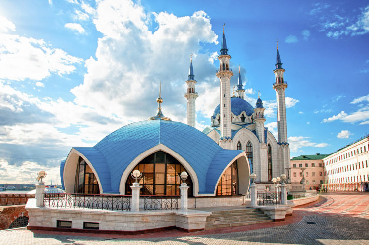

7. Казанский Кремль (Казань)

Казанский Кремль – главное украшение столицы Татарстана. Его Спасская башня, построенная в 1562 году, – самое узнавание здание древнего архитектурного сооружения. Ее главная «примета» – часы, а у них есть своя история. Первые часы Казанского Кремля были не совсем обычным механизмом, показывающим время. Их циферблат постоянно вращался, а стрелка не двигалась! Современные часы, по которым теперь сверяет время весь Татарстан, были установлены только в 1963 году. На территории Кремля в Казани постоянно проходят выставки, концерты и другие развлекательные мероприятия. Там же расположились уютные кафе с национальной татарской кухней. Самое узнаваемое здание в Кремле – «падающая» башня Союмбике. Туристы, ищущие, что посмотреть в России и Казани, имеющее отношение к древней истории страны, обязательно обратят внимание на Мавзолей казанских ханов. Со смотровой площадки кремля открывается потрясающий величественный вид на современную часть города: ЗАГС, новые дома, Арену, Дворец земледельцев и набережную. Туристы, желающие сфотографироваться в доспехах и пострелять из лука, смогут сделать это на территории Казанском кремле. Главное украшение исторического места – изящная бело-голубая мечеть Кул Шариф, вмещающая более 2,000 человек.